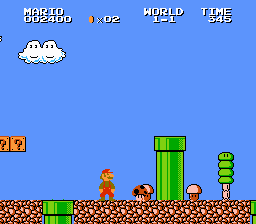

Super Mario Bros.: The Lost Levels, conocido en Japón como Super Mario Bros. 2, desarrollado y distribuido por Nintendo y lanzado en el año 1986, únicamente en ese país siendo secuela directa de Super Mario Bros. La premisa del juego es idéntica a su antecesor: Mario o Luigi deben recorrer el Reino Champiñón para enfrentarte en el castillo al Rey Koopa y, tras derrotarlo, rescatar a la Princesa Peach. Se agregan nuevos ítems, Warp Zones, y un champiñón venenoso. A diferencia de Super Mario Bros., este juego es para un solo jugador. El estilo visual se mantiene, a diferencia de la dificultad que es aumentada.  El videojuego vendió en ese país aproximadamente 2,66 millones de unidades. Super Mario Bros. 2 sería lanzado fuera de Japón en la recopilación de juegos conocida como Super Mario All-Stars en 1993 para la Super Nintendo Entertainment System, bajo el nombre de Super Mario Bros.: The Lost Levels. También hay una versión portatil de Lost Levels (llamado en esta Para Súper Jugadores) se podía desbloquear del juego Super Mario Bros. Deluxe de la Game Boy Color. En esta la dificultad es reducida. En 2004 el juego fue relanzado como parte de la serie Famicom mini de la Game Boy Advance. En 2007 el juego fue lanzado temporalmente por el Hanabi Festival. En 2008 seria otra vez lanzado pero esta vez estaria permanentemente.